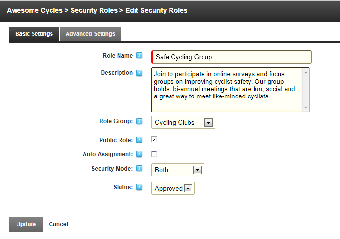

Adding a Security Role (Basic Settings)
How to add a basic security role to a site using the Security Roles module.
- Navigate to Admin >
 Security Roles - OR - Go to a Security Roles module.
Security Roles - OR - Go to a Security Roles module.
- Click the Add New Role button.
- Select the Basic Settings tab.
- In the Role Name text box, enter a name for the Security Role. This is the only required field. Choosing to update this role now and accept the default settings will add a private role that users cannot subscribe to.
- Optional. In the Description text box, enter a brief description of this role.
- Optional. At Role Group, select a group for this role if desired. Note: One or more role groups must already be created to set this field. You can also associate a role with a role group at a later time. See "Adding a Role Group"
- At Public Role?, select one of the following options:
- Mark
 the check box if all users are able to view details of this role and subscribe or unsubscribe to this role when they managing their user profile. Public roles are also referred to as "Membership Services".
the check box if all users are able to view details of this role and subscribe or unsubscribe to this role when they managing their user profile. Public roles are also referred to as "Membership Services". - Unmark
 the check box if the role is Private. Only Administrators can add a user to a private role unless it has an RSVP Code or RSVP Link (see below) that has been supplied to the user.
the check box if the role is Private. Only Administrators can add a user to a private role unless it has an RSVP Code or RSVP Link (see below) that has been supplied to the user.
- At Auto Assignment, select one of the following options:
- Mark the check box if users are automatically assigned to this role. This will expose the "Assign to existing users" field.
- At Assign to Existing Users, to assign all current and future users to this role - OR - to only assign any new users that are created to this role.
- Unmark the check box if users must be manually added to the role. If the role is public, then users can add themselves. If the role is not public, then only Administrators and SuperUsers can add user to the role.
- At Security Mode,
select one of the following options:
- SecurityRole: Select to add a security role.
- SocialGroup: Select to add a social group. Social groups are displayed on the Social Groups module allowing site members to join, follow and participate in groups.
- Both: Select to add a role that is both a social group and a security role.
- At Status, select one of the following options:
- Disabled: The Role Group is not available regardless of the "Public Role" setting.
- Approved: The Role Group is available dependent upon the "Public Role" setting.
- Pending: The Role Group is available to non-Administrators/SuperUsers regardless of the "Public Role" setting. However, the Group is not permitted until it is moved to "Approved" status.

-